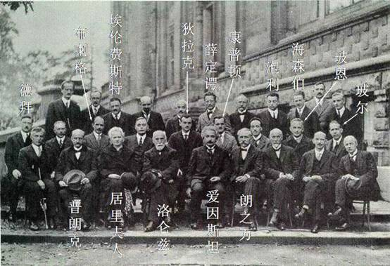

近来无事，学习之余又
近来无事，学习之余又重读《上帝掷骰子吗——量子物理史话》。虽然不求甚解，但也颇有收获。本来想写一点心得体会，但是公众场合，我就不在这里班门弄斧了。只是想说，我对物理学，主要是终极问题非常有兴趣。以后在闲暇时间，希望能多了解一些这方面的内容。
有兴趣的朋友请下载我制作的电子书《上帝掷骰子吗——量子物理史话》（pdf, 点右键另存为）。只要具有高中物理水平，还记得一点点《大学物理》的内容，阅读起来并没有难度。再给一张1927年brusell举行的第5届索而维会议的照片，照片中这些大牛可都是本书的主角啊！主要的有爱因斯坦，普郎克，波恩，波尔，海森堡，泡利，薛定谔，Direc，……绝对是物理学的全明星阵容！下面也会给个简单的人物介绍。
下周，又开始忙了。
1.彼得．德拜 美国物理化学家。1884年出生于荷兰。1901年进入德国亚琛工业大学学习电气工程， 1905年获电子工程师学位，因他通过偶极矩研究及x射线衍射研究对分子结构学科所作贡献而于1936年获诺贝尔化学奖金。1966年逝世。
2.威廉．亨利．布喇格（w.h.bragg，1862－1942）是现代固体物理学的奠基人之一，他早年在剑桥三一学院学习数学，曾任利兹大学、伦敦大学教授，1940年出任皇家学会会长。由于在使用x射线衍射研究晶体原子和分子结构方面所作出的开创性贡献，他与儿子w.l.布喇格分享了1915年诺贝尔物理学奖。父子两代同获一个诺贝尔奖，这在历史上恐怕是绝无仅有的。同时，他还作为一名杰出的社会活动家，在二三十年代是英国公共事务中的风云人物。
3. 爱因斯坦是20世纪最伟大的科学家，被公认为人类历史上最具有创造性才智的人物之一。他的名字与相对论密不可分，其实，相对论包括两种理论：其一是他1905年提出声狭义相对论；其二是他1915年提出的广义相对论。后者，我们最好称之为爱因斯坦引力论。
4.埃伦费斯特 ( p. ehrenfest, 1880－1933) ――荷兰物理学家
5.1930年，英国物理学家保罗．狄拉克（paul adrien maurice dirac，1902～1984）用数学方法描述电子运动规律时，发现电子的电荷可以是负电荷、也可以是正电荷的。狄拉克猜想，在自然界中可能存在一种“反常的”带正电荷的电子。
6.薛定谔（erwin schrodinger，1887-1961）奥地利理论物理学家，与爱因斯坦、玻尔、玻恩、海森伯等一起于20世纪20年代后期，发展了量子力学。因建立描述电子和其他亚原子粒子的运动的波动方程，获得1933年诺贝尔物理奖。
7.1922―1923年间，康普敦（a.h.compton l892―1962）研究了x射线经金属或石墨等物质散射后的光谱。
8.美籍奥地利科学家沃尔夫冈．泡利（wolfgang e.pauli，1900～1958），是迎着20世纪一同来到世界的，父亲是维也纳大学的物理化学教授，教父是奥地利的物理学家兼哲学家。
9.海森伯，w.k.（werner karl heisenberg 1907～1976）德国理论物理学家，量子力学第一种有效形式（矩阵力学）的创建者。
10.玻恩，m.(max born 1882～1970)德国理论物理学家，量子力学的奠基人之一。
11.尼尔斯．玻尔(bohr,niels)1885年10月7日生于丹麦首都哥本哈根，父亲是哥本哈根大学的生理学教授．从小受到良好的家庭教育． 1903年进入哥本哈根大学学习物理，1909年获科学硕士学位，1911年获博士学位．大学二年级时研究水的表面张力问题，自制实验器材，通过实验取得了精确的数据，并在理论方面改进了物理学家瑞利的理论，研究论文获得丹麦科学院的金奖章．
12.普朗克，m.（max planck 1858～1947）近代伟大的德国物理学家，量子论的奠基人。
13.居里夫人（1867－1934〕是最著名的女物理学家。她曾两次获诺贝尔奖，1903年的物理奖，1911年的化学奖。她受教育较晚，于1893 年获物理学位，1894年获数学学位，1903年获博士学位。局里夫人以放射性作为论文题目，她研究了很多物质，发现钍及其化合物的特性与铀相同。研究沥青铀矿时，她发现了镭和仆。1910年她成功的分离了纯镭。居里夫人对巴黎的局里实验室的建立作出很大贡献。
14.洛仑兹（hendrik antoon lorentz 1853～1928）与塞曼（pietr zeeman 1865～1943）因研究磁场对辐射现象的影响、发现塞曼效应，分享了1902年度诺贝尔物理学奖。
15.朗之万:1872年1月23日生于巴黎，法国著名的物理学家
